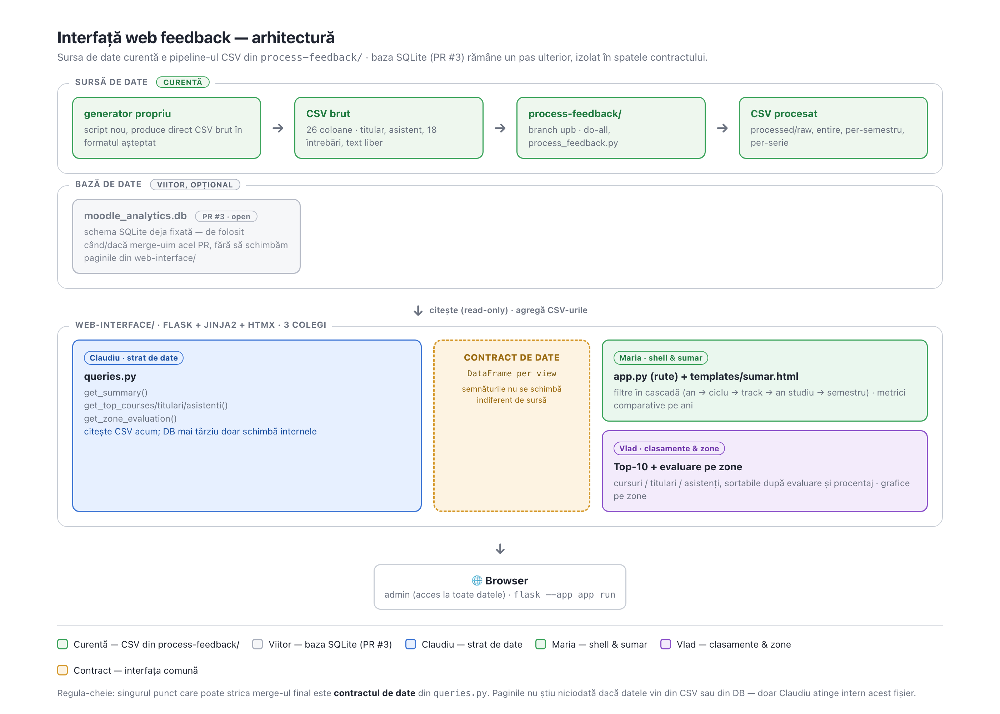
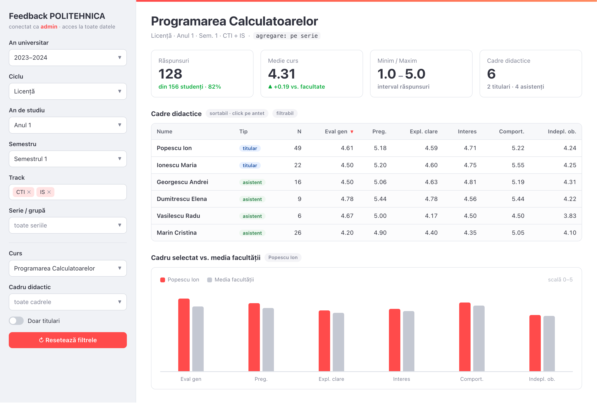

Interfață web feedback — plan de lucru
Dashboard web care afișează, filtrează și compară rezultatele feedback-ului curs.pub.ro, peste ceea ce există deja în pipeline-ul de retrieve/process. Mai jos e planul nostru, deciziile pe care le-am luat, și cele pe care încă le discutăm.
Obiective
Construim o interfață web pentru un admin care are acces la toate datele de
feedback și poate filtra pe an universitar, ciclu, an de studiu, semestru,
track, curs și cadru didactic. Interfața doar citește datele
deja existente — nu modificăm nimic din retrieve-feedback/,
process-feedback/ sau din scripturile de bază de date (PR #3).
Echipa: Claudiu coordonare + strat de date, Maria shell & sumar, Vlad clasamente & zone. Vezi Împărțirea muncii.
Context
-
Lucrăm în repo-ul
MariaFudulia/feedback, pe branch-uldevelop(acolo e pipeline-ul UPB activ —mastera rămas în urmă, din 2021). -
Interfața citește CSV-urile produse de
process-feedback/. Scriemqueries.pyca strat separat, ca să putem trece ulterior pe baza SQLite din PR #3 fără să schimbăm restul aplicației. Vezi Sursa de date.
Arhitectură
Separăm complet logica de date de logica de interfață: frontend-ul nu știe
nimic despre sursa reală a datelor; singura legătură este contractul din
web-interface/queries.py.

process-feedback/) vs. viitoare
(baza SQLite, PR #3), stratul de interogări, și cei trei proprietari
de fișiere.
Stack și motivație
Flask, confirmat cu Razvan. Motivul e arhitectural, nu de gust: Flask are rutare și autentificare per-pagină reale — necesare pentru planul de mai încolo cu acces public pentru studenți (vezi mai jos). Streamlit nu are așa ceva (o singură aplicație, un singur public), deci am construi direct pe ce ne trebuie și mai târziu, nu doar pe ce e mai rapid acum.
Templating cu Jinja2 (inclus în Flask). Scheletul actual are filtre/sortare ca formulare simple (submit → reîncarcă pagina) — zero JS, cel mai puțin cod posibil. htmx rămâne o opțiune pentru mai târziu, dacă vrem schimbări de filtru fără reload, fără să scriem JS de mână.
A existat și un prototip Streamlit, construit într-o explorare anterioară — a fost șters (nimeni nu apucase să construiască pe el), nu mai există în repo. Mockup-ul de mai jos vine din acel prototip și rămâne valabil ca țintă vizuală.
Acces public pentru studenți (mai încolo)
Acum interfața e strict pentru admin, fără roluri — așa cum ni s-a cerut
pentru moment. Planul pe termen lung (al lui Razvan) e ca o parte din date să
devină publice, fără cont, pentru studenți. Când vine
momentul, structura Flask o suportă direct: rute publice fără autentificare +
rute de admin cu @login_required, fără să rescriem stratul de
date.
De-aia contează separarea din Contractul de date:
queries.py e un modul Python simplu, fără nimic specific de
framework web. Rutele publice și cele de admin importă amândouă direct din
queries.py.
Regulă: queries.py nu importă niciodată
Flask (sau orice alt framework web) — rămâne un modul Python simplu,
testabil independent. Cache-ul și logica de request/sesiune stau doar în
rutele Flask.
Sursa de date
decis
Interfața citește acum CSV-urile produse de process-feedback/
(branch upb), nu baza SQLite. Baza de date din PR #3 rămâne
un pas ulterior — de-aia ținem toată logica de citire a datelor izolată în
web-interface/queries.py, ca atunci când trecem pe DB să schimbăm
doar ce e în interiorul acelor funcții, nu și paginile care le folosesc.
Ce citim, concret
do-all produce, pentru fiecare fișier brut din csv/raw/,
un fișier procesat cu același nume în processed/raw/ (rândurile
Minim/Mediu/Maxim + câte un rând per titular și per asistent, pentru cursul
respectiv). Pentru agregări pe mai multe cursuri, aceleași rânduri există deja
calculate, pe alte niveluri:
processed/entire/{L,M,all}.csv— agregat pe tot Licența/Master/global, pentru un an universitar (baza pentru „Sumar comparativ”).processed/per-semestru/<an>-<semestru>.csv— ex.L-A1-S1.csv(pagina „Completare și evaluare”).processed/per-series/<an>-<semestru>-<serie>.csv— ex.L-A1-S1-CA.csv(pagina „Pe ani de studiu”).sep-processed/{cti,is}/average/— adaugă mediile unui titular pe toate seriile/cursurile lui, utile pentru Top-10 titulari.
courses.shortname/numele fișierelor codifică toate dimensiunile de
filtrare, ex. 03-ACS-L-CTI-Calculatoare-A2-S1-DEEA-CA = facultate ·
Licență/Master · CTI/IS · An2 · Sem1 · curs DEEA · serie CA.
num_utilizatori (nr. studenți înscriși, pentru procentaj
feedback) — găsit: retrieve-feedback/dump_enrolled_users.py descarcă
studenții înscriși per curs, iar mappings/num_students_per_course
transformă asta deja în num_users.csv. Nu apărea în schema din
PR #3, dar există în pipeline-ul de CSV.
Schema DB (PR #3, pentru mai târziu)
categories(category_id PK, name, parent_id, path, depth, sortorder)
courses(course_id PK, shortname UNIQUE, fullname, startdate, enddate, category_id)
feedback_instances(instance_id PK, course_id, name, anonymous)
feedback_responses(response_id PK, attempt_id UNIQUE, instance_id,
prof_name, assist_name, eval_overall, expected_grade, load, equipment,
part_percent, prof_know, prof_teach, prof_interact, prof_behave, lecture_doc,
assist_know, assist_teach, assist_interact, assist_behave, lab_doc,
assign_time, assign_diff, assign_useful,
positive_text, negative_text, difficulty_text, other_text)Contractul de date
Tot ce afișează UI-ul trece prin web-interface/queries.py —
nicio pagină nu importă direct din altă sursă. Pragurile de selecție (fixe,
din cerințele coordonatorului) se aplică în aceste funcții, nu în UI:
curs ≥7% proc_feedback şi ≥3 feedback-uri · titular ≥7% mediu şi
≥15 feedback-uri · asistent ≥10 feedback-uri.
get_summary(nivel=None) -> an_universitar, nivel, num_feedback, proc_completare, num_cursuri, evaluare
get_course_coverage() -> categorie, num_cursuri, pct
get_period_breakdown(ciclu=None) -> bucket, proc_completare, evaluare
get_year_breakdown(an, ciclu="L") -> serie, proc_completare, evaluare
get_top_courses(order_by="evaluare_curs", ciclu=None) -> curs, prof, num_feedback, proc_feedback, num_utilizatori, evaluare_curs
get_top_titulari(order_by="evaluare_prof") -> persoana, num_cursuri, num_feedback, proc_feedback, num_utilizatori, evaluare_curs, evaluare_prof
get_top_asistenti(order_by="evaluare_prof") -> persoana, num_feedback, evaluare_curs, evaluare_prof
get_score_distribution(entitate) -> banda, num, pct
Momentan toate delegă către mocks.py (date derivate din deck-ul
coordonatorului) — deja testat (tests/test_contract.py, 8/8
trec) și consumat de cele 7 rute Flask reale (tests/test_smoke.py,
toate răspund 200). Următorul pas e să înlocuim corpul fiecărei funcții cu
citire din CSV-urile din Sursa de date;
semnăturile de mai sus rămân aceleași și când trecem pe baza de date.
Mockup vizual

Împărțirea muncii — ce face fiecare, în paralel
Regula de bază: rutele Flask importă doar din queries,
niciodată din mocks direct. Există deja un schelet Flask
funcțional — cele 7 rute de mai jos răspund 200 și afișează date reale
(tests/test_smoke.py) — dar minimal: formulare simple, fără
filtrele în cascadă complete. Fiecare completează partea lui peste ce
există deja.
Claudiu Strat de date + coordonare
web-interface/queries.py ·
web-interface/db/Implementează funcțiile din contract citind CSV-urile din Sursa de date, plus generatorul propriu de date de test (vezi Tema). Coordonează repo/branch/CI și ține la zi acest document.
Maria Shell, filtre, sumar
web-interface/app.py (rute Flask + shell) ·
web-interface/templates/base.html ·
web-interface/templates/sumar.html ·
web-interface/templates/completare_evaluare.htmlLayout comun (navigare, filtre în cascadă an → ciclu → track → an studiu → semestru), pagina „Sumar comparativ”, pagina de completare/evaluare pe an-semestru.
Vlad Clasamente și evaluare pe zone
web-interface/templates/pe_ani_de_studiu.html ·
web-interface/templates/top10_cursuri.html ·
web-interface/templates/top10_titulari.html ·
web-interface/templates/top10_asistenti.html ·
web-interface/templates/evaluare_pe_zone.html
Clasamente Top-10 (cursuri/titulari/asistenți), sortabile după evaluare și
procentaj, plus distribuțiile de scor pe benzi (4-5/3-4/2-3/1-2). Rutele
corespunzătoare din app.py se coordonează cu Maria (un singur
fișier de rute, deocamdată).
Workflow Git
-
git fetch origin && git checkout develop && git pull— develop, nu master. - Branch propriu, cu prefix de nume:
maria-b/...,vlad-c/.... -
Setup local:
cd web-interface && python3 -m venv .venv && source .venv/bin/activate && pip install -r requirements.txt && flask --app app run --debug - Draft PR devreme, către
develop(nu master, nu upstream direct). - Merge când pagina proprie rulează fără erori pe mock — nu se așteaptă pe ceilalți.
Ce rulează automat
Toate astea sunt deja în repo, scopate strict la web-interface/ —
nu ating restul proiectului (process-feedback/, analysis/ etc.).
Local, înainte de commit
.pre-commit-config.yaml rulează ruff (lint + format)
doar pe fișiere din web-interface/. Instalare, o singură dată:
pip install pre-commit
pre-commit install
Pentru rulat testele local (pytest tests/) sau ruff
manual, e nevoie de requirements-dev.txt (adaugă pytest/ruff peste
requirements.txt): pip install -r requirements-dev.txt.
CI, pe fiecare push/PR
.github/workflows/web-interface-ci.yml — declanșat doar când se
modifică ceva în web-interface/ (nu rulează degeaba pe commit-uri
din altă parte a repo-ului). Două job-uri:
lint—ruff check+ruff format --check.test—web-interface/tests/:test_contract.py(fiecare din cele 8 funcții dinqueries.pyîntoarce exact coloanele din contract — asta prinde imediat dacă cineva rupe contractul din greșeală) +test_smoke.py(fiecare din cele 7 rute Flask răspunde 200, viatest_client()).
Testat local înainte de a fi împins: 15/15 teste trec, lint curat, pre-commit rulează curat.
De cerut Mariei: niciunul dintre noi nu poate activa singur
protecție pe branch (verificat — acces „Write”, nu „Admin”, pe repo).
Maria are nevoie să pună pe develop: PR obligatoriu înainte de
merge, status check-urile lint/test de mai sus
obligatorii, fără push direct/force-push.
Tema: generare feedback + rulare process-feedback/
temă dusă la capăt
Am urmat pașii ceruți: am generat feedback folosind branch-ul
feedback al repo-ului Cătălinei (directorul
generate-feedback/), apoi am rulat scripturile din
process-feedback/ (branch upb) peste datele
generate. Mai jos, concret, ce am întâlnit.
Ce am observat
Formularele generate au 12 întrebări, cu text placeholder
în engleză (unele trunchiate cu ... direct în cod). Scripturile
de procesare pe care le-am găsit — atât cele vechi, cât și cele noi —
presupun un formular cu ~25 de întrebări, text exact în
română. Concret:
-
json2csv-filepresupune 25 de întrebări per tentativă (head -25hardcodat în script). Cu doar 12, fereastra de 25 de linii ajunge să ia și răspunsuri din tentativa următoare, iar rândurile ies amestecate. Am rulat pe toate cele 9654 fișiere generate — toate ies amestecate la fel. -
process_feedback.pycrapă cuIndexError/ValueErrorpe fișierele rezultate, pentru că pozițiile de coloană pe care le așteaptă nu se mai potrivesc după amestecul de mai sus. -
processor.py(pipeline-ul Python mai nou) are o verificare separată,len(responses) == 25, folosită ca să decidă dacă un fișier e feedback valid de curs — cu 12 întrebări, niciun fișier generat nu trece de ea. -
Am încercat și
migrate.pydin PR #3 (varianta cu bază de date): potrivește text exact în română, iar formularele generate au text în engleză — 0 din 878 rânduri migrate au ieșit cu vreun câmp numeric completat. Numele de profesor/asistent ies și ele identice pe fiecare curs.
Ni se pare că firul comun e diferența de format: scripturile pe care le-am găsit așteaptă un formular de ~25 de întrebări, în română; cel generat are 12, în engleză. Nu știm dacă ne scapă nouă un pas de conversie, sau dacă merită ajustat generatorul.
Am mai observat că process-feedback/README.md descrie
process_feedback.py so2/ (cu argument de folder), dar scriptul
citește acum doar din stdin — probabil README-ul a rămas în urmă față de cod.
Am verificat dacă exista deja o rezolvare
Înainte să scriem ceva nou, ne-am uitat la celelalte PR-uri deschise pe
generate-feedback/ — Irina Zamfir (PR #17) și Bianca Geica
(PR #18). PR #18 chiar pare să rezolve exact problema noastră:
„Schema Fix: Updated from 15 to 25 questions to match the real Moodle
structure”, plus nume variate în loc de „Prenume NUME” peste tot. Am clonat-o
și am rulat-o efectiv.
Numărul de întrebări e într-adevăr 25 acum — json2csv-file nu
mai amestecă rândurile. Dar am verificat coloană cu coloană valorile rezultate
față de ce așteaptă process_feedback.py, și ordinea tot nu se
potrivește: generatorul are o întrebare „evaluare generală” în plus înaintea
secvenței pe care process_feedback.py o tratează ca date, ceea ce
mută totul cu o poziție. Empiric: coloana pe care process_feedback.py
o citește ca eval_overall ajunge să fie de fapt nota așteptată
(1-10), iar get_eval() recunoaște doar cifre 0-5 — pe un eșantion
de 200 de răspunsuri, 70 au ieșit tăcut 0. Nu mai crapă, dar iese greșit fără
nicio eroare — mai greu de prins decât bug-ul inițial.
Am mai găsit, verificând independent, o a doua problemă: json2csv-file
folosește intern pr -25 -a -t -s,, care trunchiază silențios orice
valoare mai lungă de ~19-20 caractere (verificat izolat, în afara oricărui
generator). Afectează nume lungi și tot ce ține de text liber, indiferent de
generatorul folosit.
Ne-am uitat și la PR #7 (rescriere din bash în Python) — nu atinge
process_feedback.py, iar json2csv-folder.py al lor
cheamă în continuare același json2csv-file nereparat.
Concluzie: nicio soluție existentă nu rezolvă de fapt problema, chiar dacă
una dintre ele (PR #18) pare la prima vedere s-o facă. Ne întărește
decizia de mai jos — ocolim complet json2csv-file.
Ce am decis
Am recitit exact ce așteaptă process_feedback.py ca input (poziția
fiecărei coloane, formatul fiecărui răspuns) și rândul brut are, de fapt, o
formă simplă și fixă: 26 de coloane, indexate 0-25 — coloanele 0-1 neutilizate,
coloana 2 = numele titularului, coloana 3 = numele asistentului, coloanele 4-21 =
cele 18 întrebări de evaluare, coloanele 22-25 = text liber. Scriem un generator propriu, mic,
care produce direct rânduri în acest format — ocolim complet pasul JSON→CSV
(acolo sunt ambele bug-uri de mai sus), fără să depindem de niciunul dintre
generatoarele existente sau de migrate.py.
Întrebări / decizii
Am decis să scriem un generator propriu pentru date de test (vezi
Tema) — mic, țintit direct pe formatul pe care
process_feedback.py îl citește. Am verificat întâi dacă exista
deja o rezolvare (PR-urile #17, #18, #7) — niciuna nu funcționează corect
la o verificare atentă, deci mergem înainte cu varianta proprie. Spunem aici
dacă apare ceva de reconsiderat, dar nu blocăm pe un răspuns ca să continuăm.
PR #20 (Vlad, Flask „Hello World") — acum că mergem tot pe Flask, merită văzut cu Vlad dacă branch-ul ăla se coordonează cu munca de aici, sau rămâne separat.